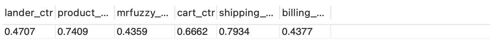

Website Analysis
(MySQL)
Database
This project query and analyze an e-commerce website simplified database with MySQL, showing samples of website performance key metric analysis, like traffic source, channel quality, bounce rate etc.
Traffic Analysis & Optimization
Traffic source analysis aims to understand where customers come from and which channels are driving the highest quality traffic. Paid traffic commonly tags with tracking (UTM) parameters, which are appended to URLs and allow us to associate website traffic with specific sources and campaigns. By identifying top traffic sources, measuring conversion rates and analyzing trends, we could optimize bidding strategy
By analyzing the top ttrafffic source, we could drill deeper into gsearch nonbrand campaign traffic to explore potential optimization opportunities. As we notice sessions trend go down and break down the conversion rate by device type, increase bids on desktop maybe helpful.
Website Measurement & Testing
Website content analysis focuses on understanding which pages are seen the most by users, to identify where to focus on improving business by key metrics like bounce rate and conversion rate. Here is the sample of Landing page analysis, find out the top landing page by sub-query.
High volume doesn't mean low bounce rate or high conversion rate, the most common way is setting up A/B test on live traffic and decide which version of landing page could use going forward. Here is a sample of querying bounce rate for each landing page by multiple steps using temporary tables, which is easier for others to read.
Conversion funnel analysis is about understanding user’s experience on their journey toward purchasing products, which could identify most common paths customers take before purchasing and optimize critical pain points where users are abandoning.
select count(distinct case when product_made_it=1 then website_session_id else null end)/count(distinct website_session_id)as lander_ctr, count(distinct case when mrfuzzy_made_it=1 then website_session_id else null end)/count(distinct case when product_made_it=1 then website_session_id else null end)as product_ctr, count(distinct case when cart_made_it=1 then website_session_id else null end)/count(distinct case when mrfuzzy_made_it=1 then website_session_id else null end)as mrfuzzy_ctr, count(distinct case when shipping_made_it=1 then website_session_id else null end)/count(distinct case when cart_made_it=1 then website_session_id else null end)as cart_ctr, count(distinct case when billing_made_it=1 then website_session_id else null end)/count(distinct case when shipping_made_it=1 then website_session_id else null end)as shipping_ctr, count(distinct case when thank_made_it=1 then website_session_id else null end)/count(distinct case when billing_made_it=1 then website_session_id else null end)as billing_ctr from session_level_made;